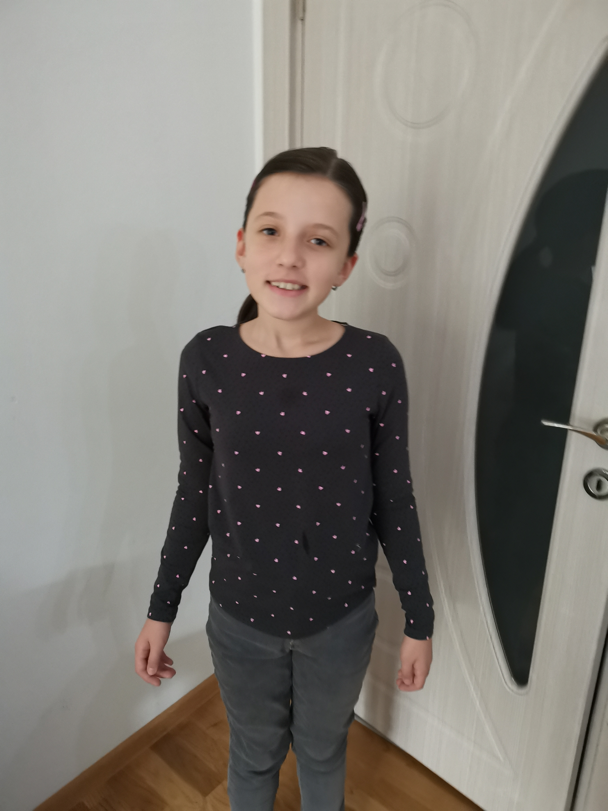

Dobar dan, Ja sam Abasa!
Ja sam
učenik OŠ "Travnik" i učim programiranje.
O meni
Tko je Abasa
Front-End programer vođen radoznalošću sa dizajnerskim detaljima.
Ja sam strastvena web dizajnerka s nevjerojatnom kreativnošću i oštrim okom za detalje. Imam 11 godina. Idem u OŠ "Travnik". Moj put u svijet dizajna počeo je još u 9 godini, kada sam otkrila svoju fascinaciju za estetiku i funkcionalnost digitalnih platformi. Od tada, ja neprestano istražujem nove tehnike, trendove i alate kako bi unaprijedila svoje vještine.Ja sam osoba koja voli istraživati nove stvari i upoznavati različite ljude. Uvijek sam otvorena za nova iskustva i spremna sam prihvatiti izazove. Volim putovati i istraživati različite kulture, jer smatram da putovanja obogaćuju dušu. Također volim čitati knjige, gledati filmove i uživati u prirodi. Vjerujem u pozitivan pristup životu i trudim se uvijek pronaći svjetlo na kraju tunela. Smatram da je važno biti iskren i otvoren prema drugima, te se trudim biti podrška svojim prijateljima i obitelji.
SPOSOBNOSTI I ALATI
Moja kutija sa alatima i stvari koje mogu da uradim
Vještine, alati i tehnologije koje koristim da oživim vaše proizvode:
HTML
CSS
Prilagođene stranice
Trenutno radim na:
Poboljšavam svoje vještine i razumijevanje CSS i html. Nadam se da ću nekad kasnije početi učiti Java Script.
Posao
Izbor stvari koje sam napravila
Asus
Ovo je kopija asus stranice. Bio mi je zadatak zadan da napravim stranicu sličnu ovoj.
Spužva Bob stranica
Ovo je bila zadaća koju smo trebali uraditi. Trebalo je napraviti stranicu koja su dva diva na centru i trebalo je dodati sliku i rečenice. Uzela sam sliku i rečenice o Spužva Bobu i Patriku.
Quest
Ovo nam je isto bilo za zadaću. Trebali smo kopirati jedan dio stranice Quest. Nadam se da sam dobro napravila.
Stranica o BIH
Radili smo ovo u školi. Zadatak nam je bio da napravimo dva diva koji stoje jedno ispod drugog. Trebali smo isto da u divove stavimo sliku i rečenice jedne ispod druge. Uzela sam slike i rečenice o BIH.
Uicookies šablon
Ovo nam je bio zadatak da kopiramo jedna od Uicookies šablona. Trebali smo napraviti kopiju stranice. Pravu stranicu možete ovdje
Svjedoćenja
Fine stvari koje su ljudi rekli
Kao web dizajner, ona je zaista izvanredna. Njene web stranice su pravo remek delo - estetski privlačne, funkcionalne i jednostavne za korišćenje. Njen dizajn je uvek inovativan i prilagođen potrebama korisnika. Ona ima oštro oko za detalje i uvek teži savršenstvu u svom radu. Njena strast prema web dizajnu je očigledna u svakom projektu koji radi. Ljudi je vide kao stručnjaka u svojoj oblasti i uvek se raduju saradnji s njom. Kao web dizajner, ona je definitivno jedan od najboljih u školi

Ivan-nastavnik od "Mali Programer"
Nordin-nastavnik od "Mali Programer"
Kao web dizajnerica, ona je zaista izvanredna. Njeni dizajni su sofisticirani, elegantni i intuitivni za korisnike. Njena kreativnost i veština u kombinovanju boja, fontova i elemenata dizajna je zaista impresivna. Uvek uspeva da uhvati suštinu brenda ili ideje i prenese je kroz svoje radove na veb stranicama. Njena posvećenost detaljima i želja za stalnim usavršavanjem je ono što je čini istinskim profesionalcem u svetu web dizajna.
Naša web dizajnerka je izuzetno talentovana i kreativna. Njen rad odražava visok nivo stručnosti i pažnje posvećene detaljima. Sa svojim jedinstvenim dizajnom, uspešno stvara vizuelno privlačne i funkcionalne veb stranice koje privlače pažnju korisnika. Njena sposobnost da kombinuje estetiku sa korisničkim iskustvom je zaista impresivna.
Ado-nastavnik od "Mali Programer"
Emel-nastavnik od "Mali Programer"
Ona je talentovana web dizajnerka sa izuzetnim vizuelnim senzibilitetom. Njeni radovi su elegantni, moderni i funkcionalni, savršeno prilagođeni potrebama klijenata. Svestrana je u svojim veštinama, vrsna u korišćenju različitih alata i tehnika kako bi stvorila atraktivne i korisne veb stranice. Sa pažnjom posvećuje detaljima i uvek teži ka savršenstvu. Kreativna je, inovativna i uvek spremna da prihvati nove izazove.